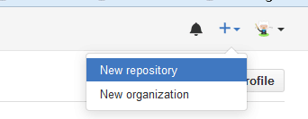
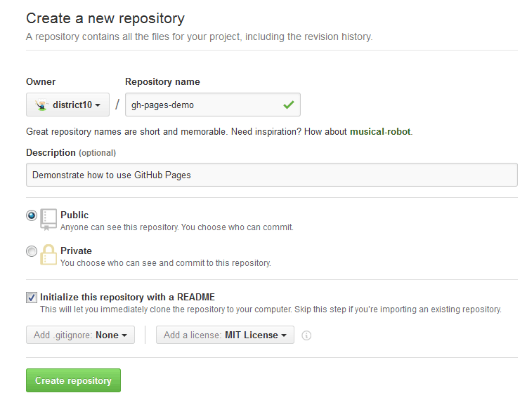
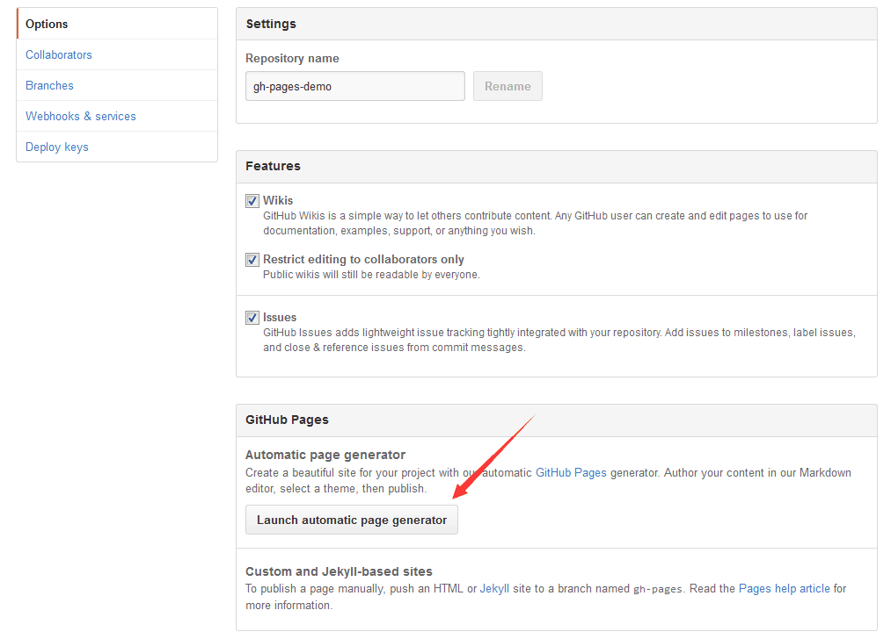
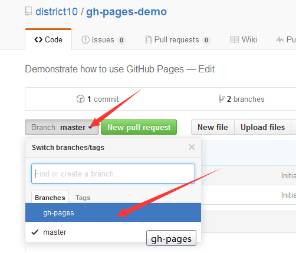
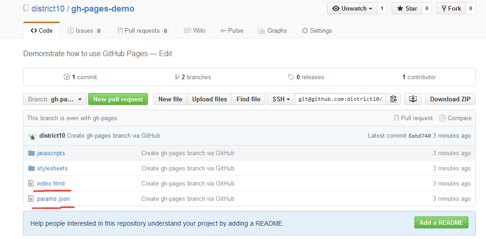

展示 GitHub Pages 怎么用
很简单的~
gh-pages-demo
Demonstrate how to use GitHub Pages
说说怎么用 GitHub 的 Pages 服务。
如下图，首先，新建一个 repo。


输入 repo 的名称，描述，【一定】要勾选生成 README 这个选项，不然你不懂命令行使用 git 就傻了。
然后点击 Create repository。

然后就可以看到 repo 生成好了。里面有一个 README.md 文件。
要生成 GitHub Pages，最简单的方式就是用官方的 generator。
先点击 Settings，如下图。

然后 Launch automatic page generator。

在这个页面编辑这个 repo 的主页，首先设置 Project Name，其实是 Tagline， 然后下面有默认生成的 GitHub Pages 指导说明，你把这些文字改成自己的，就可以了。 这里用的是 Markdown 语法。当然你也可以用上面提供的富文档编辑按钮。

然后点击下方的按钮，就到了下面的界面。这是 GitHub Pages 提供的模板。你可以从里面选择 自己喜欢的风格。

比如这是 Time Machine 风格。

我喜欢 Minimal 风格，所以选了它。选完后点击 publish page，主页就生成好了。
GitHub 会把你带回到 repo 主界面，并提示你主页生成好了，地址在 blah blah，如下图：

先不急去那个主页，看看 repo 下面多了什么？一个新的 Branch，叫 gh-pages，点击它。

发现下面有一个 index.html，一个 params.json，还有两个文件夹。这就是网页的所有源码。
index.html 是主页，params.json 包含了你主页的 Markdown 内容，以及你的标题，Tagline 信息，等等。

然后去自己的 repo 展示主页看看把，如果你的 repo 叫 some-repo，你的用户名叫 some-user，那你的
repo 的 GitHub Pages 主页就是 <some-user>.github.io/some-repo。如下图。